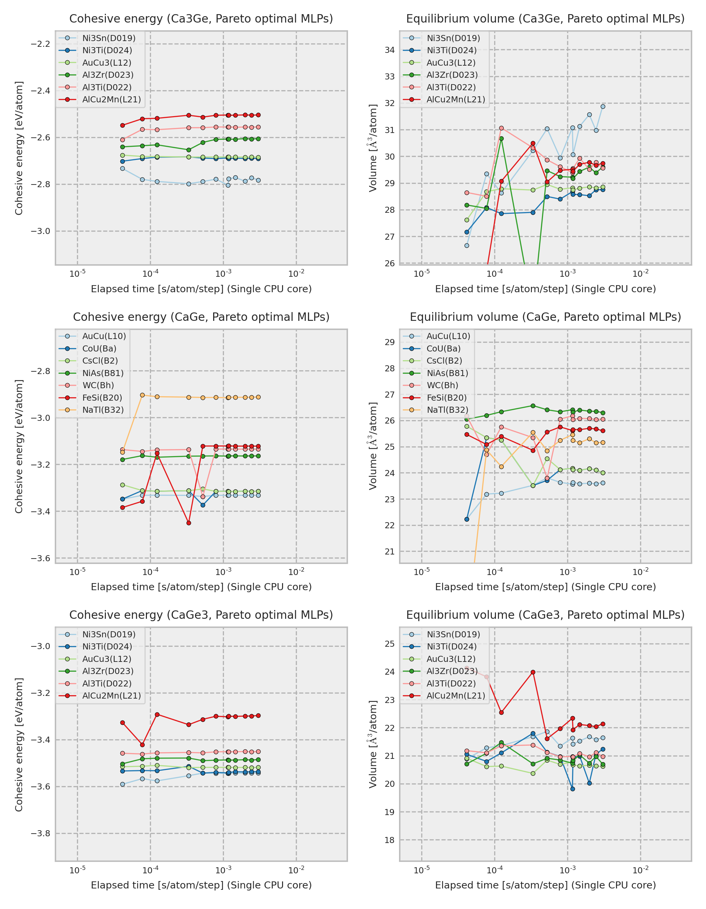

Ca-Ge-2022-06-12¶

The current structure dataset comprises 37476 structures generated from elemental ICSD structures and binary ICSD prototype alloy structures. A more detailed procedure is found in Phys. Rev. B 102, 174104 (2020).
Predictions using Pareto optimal MLPs
{kind=link}
The cohesive energy and volume are obtained by performing a local structure optimization from the DFT equilibrium structure. In addition, the DFT equilibrium structure is obtained by optimizing a prototype structure included in ICSD, and the prototype is used as the structure legend in the figure. Therefore, the structure type of the converged structure is sometimes different from that shown in the legend even if the potential energy surface predicted by MLP is almost the same as the true one.
The other properties predicted by each Pareto optimal MLP are available from column Predictions in the following table.
Name |
Time [ms] (1core/36cores) |
RMSE [meV/atom]/[eV/A] |
Predictions |
Files |
|---|---|---|---|---|
pair-1 |
0.027 / 0.005 |
129.62 / 0.3460 |
– |
– |
pair-17 |
0.027 / 0.005 |
111.47 / 0.3142 |
– |
– |
pair-33 |
0.028 / 0.005 |
43.146 / 0.1664 |
– |
– |
pair-37 |
0.039 / 0.005 |
41.229 / 0.1633 |
– |
– |
pair-49 |
0.041 / 0.005 |
22.383 / 0.1286 |
– |
– |
pair-50 |
0.078 / 0.008 |
13.091 / 0.1094 |
– |
– |
pair-51 |
0.123 / 0.014 |
9.8302 / 0.1053 |
||
pair-60 |
0.335 / 0.025 |
7.4612 / 0.0919 |
||
gtinv-182 |
0.525 / 0.035 |
6.3159 / 0.0665 |
||
gtinv-257 |
0.792 / 0.055 |
3.5440 / 0.0567 |
||
gtinv-260 |
1.166 / 0.082 |
3.4199 / 0.0591 |
||
gtinv-416 |
1.187 / 0.076 |
3.1928 / 0.0533 |
||
gtinv-269 |
1.464 / 0.086 |
3.1275 / 0.0541 |
||
gtinv-272 |
1.986 / 0.120 |
2.8504 / 0.0513 |
||
gtinv-436 |
2.447 / 0.145 |
2.7408 / 0.0515 |
||
gtinv-441 |
3.028 / 0.181 |
2.3474 / 0.0495 |
Column “Time” shows the time required to compute the energy and forces for 1 MD step and 1 atom, which is estimated from a simulation of 10 runs for a structure with 284 atoms using a workstation with Intel(R) Xeon(R) CPU E5-2695 v4 @ 2.10GHz. Note that the MLPs should be carefully used for extreme structures. The MLPs often return meaningless values for them.
All Pareto optimal MLPs are available
here.